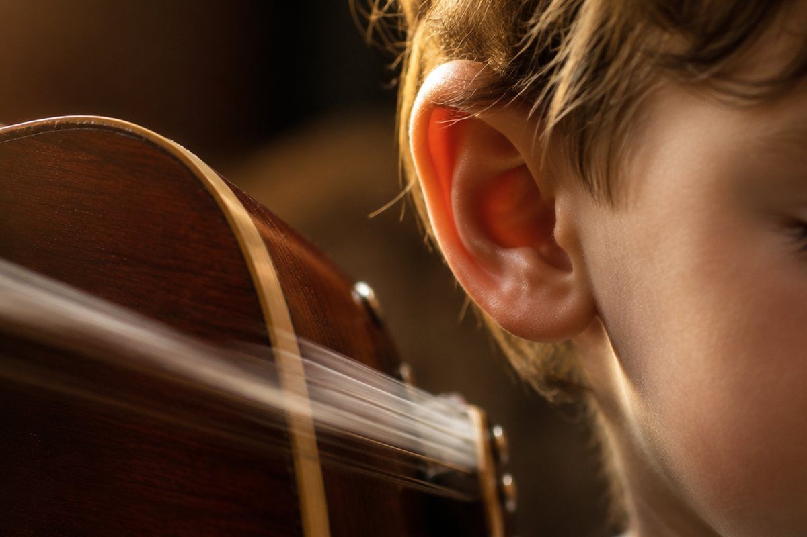

소리는 어떻게 생기고 전해질까?

북을 '둥!' 하고 치면 소리가 나요. 그 소리는 어디에서 생겨서 어떻게 우리 귀까지 오는 걸까요?
소리는 떨림에서 생겨요
소리가 나는 물체를 손으로 살짝 만져 보면 바르르 떨리는 것이 느껴져요. 이렇게 물체가 빠르게 흔들리는 것을 '떨림'이라고 해요.
소리가 나는 물체는 모두 떨리고 있어요. 떨리는 물체를 손으로 꽉 잡아 떨림을 멈추면 소리도 함께 멈춰요.
목에 손을 대고 '아~' 소리를 내 보면 목이 떨리는 것을 느낄 수 있어요.
큰 소리와 작은 소리
소리의 크고 작은 정도를 '소리의 세기'라고 해요. 북을 세게 치면 큰 소리가 나고, 약하게 치면 작은 소리가 나요.
큰 소리가 날 때는 물체가 크게 떨리고, 작은 소리가 날 때는 물체가 작게 떨려요.
도서관에서는 작은 소리로, 운동장에서 친구를 부를 때는 큰 소리로 말해요.
높은 소리와 낮은 소리
소리의 높고 낮은 정도를 '소리의 높낮이'라고 해요. 실로폰의 짧은 음판을 치면 높은 소리, 긴 음판을 치면 낮은 소리가 나요.
높은 소리는 물체가 빠르게 떨릴 때, 낮은 소리는 물체가 느리게 떨릴 때 나요. 소리의 세기와 높낮이는 서로 다른 것이니 헷갈리지 마세요!
구급차 사이렌, 새소리는 높은 소리이고 큰북 소리, 뱃고동 소리는 낮은 소리예요.
소리는 무엇을 통해 전해질까요?
소리는 공기 같은 기체를 통해 우리 귀에 전해져요. 그뿐 아니라 책상 같은 고체, 물 같은 액체를 통해서도 전해져요.
실 전화기는 팽팽한 실이 떨림을 전해 주어서 멀리 있는 친구의 목소리가 들려요. 물속에서 수영할 때 밖의 소리가 들리는 것도 물이 소리를 전하기 때문이에요.
책상에 귀를 대고 친구가 책상을 톡톡 두드리면 소리가 또렷하게 들려요.
소리는 부딪치면 되돌아와요
소리가 나아가다가 물체에 부딪치면 되돌아오는데, 이것을 '소리의 반사'라고 해요. 딱딱하고 매끄러운 물체는 소리를 잘 반사하고, 부드러운 물체는 소리를 덜 반사해요.
시끄러운 소리(소음)를 줄이려면 방음벽을 세우거나, 푹신한 물건을 깔아 소리가 덜 퍼지게 할 수 있어요.
산에서 '야호!' 하고 외치면 메아리가 되돌아오는 것이 소리의 반사예요.
핵심 낱말
- 떨림
- 물체가 빠르게 흔들리는 것
- 소리의 세기
- 소리가 크고 작은 정도
- 소리의 높낮이
- 소리가 높고 낮은 정도
- 소리의 반사
- 소리가 물체에 부딪쳐 되돌아오는 것
- 소음
- 듣기 싫고 시끄러운 소리
한 줄 정리
- 소리는 물체의 떨림으로 생겨요.
- 소리에는 세기(크고 작음)와 높낮이(높고 낮음)가 있어요.
- 소리는 기체·액체·고체를 통해 전해지고, 물체에 부딪치면 반사돼요.
학교 교육과정 연결
- [4과07-01] 여러 가지 물체를 이용하여 소리를 내보고, 소리가 나는 물체는 떨림이 있음을 설명할 수 있다.
- [4과07-02] 큰 소리와 작은 소리, 높은 소리와 낮은 소리를 구분하고, 세기와 높낮이가 다른 소리를 낼 수 있다.
- [4과07-03] 여러 가지 물질을 통하여 소리가 전달되는 것을 관찰하고, 소음을 줄이는 방법을 찾아 일상생활에서 실천할 수 있다.